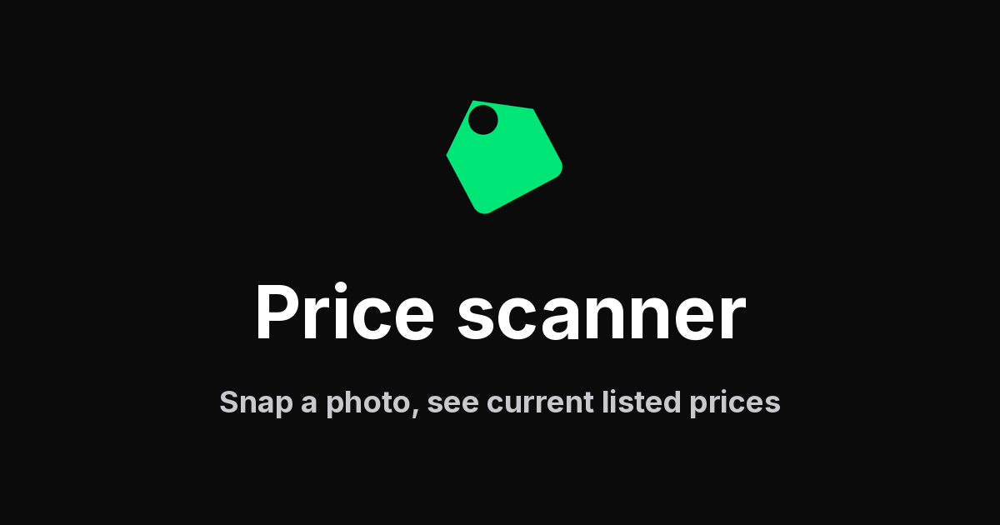

A price scanner tells you what something is worth from a photo. You snap the item, the scanner works out exactly what it is, then it checks current listings for that same item and shows you a range, an estimated sale price, and the listings behind the number. That last part matters. A number with no listings behind it is just a guess with a decimal point.
If you have ever typed "old watch" or "rare card" into a search bar, you know why this beats a name search. You get a wall of prices for things that have nothing to do with the one in your hand. A price scanner starts from the item itself.  How Much Is It Worth: Scanner does this on iPhone, and there is one free scan on the website with no download.
How Much Is It Worth: Scanner does this on iPhone, and there is one free scan on the website with no download.
What actually sets a price is the detail. The reference number on a watch. The set and edition on a trading card. The date and mint mark on a coin. The condition of all three. Most people do not know which details matter for a given item, so they either sell too cheap or list too high and wait for months.
A good price scanner fixes both problems. It reads the details off your photo, then compares like with like. That is the whole job.
Here is what it reads in each category:
The gap between the listed range and the estimated sale is the bit most people miss. The listed range is what sellers are asking right now. The estimated sale is what the item would more likely sell for, and it usually sits below the typical asking price. If you price off the highest listing you found, you are chasing a number no buyer is paying.
Want to try it? Start your free 3-day trial in the iPhone app at https://apps.apple.com/app/id6832980231. You get one free scan on the website at https://howmuchisitworth.today/price-scanner. On Android? Check https://howmuchisitworth.today/ for the Android release.
It does not read barcodes. It is a photo scanner, built for things that either have no barcode or where the barcode tells you nothing about condition: coins, cards, jewellery, watches, collectibles, and used electronics. If you are standing in a supermarket comparing a packaged product, a barcode app is the right tool.
It also struggles where any method struggles. One-off handmade pieces, local-only items like large furniture, and anything with very few listings anywhere will still get an identification, but the price comes back as a labelled rough estimate. Treat that as a starting point, not an answer.
And it is not an appraisal. A scan is a market estimate with a confidence level. If you need a figure for insurance or an estate, or the item might be worth serious money, use the scan to decide whether paying a qualified appraiser makes sense.
The app shows prices in your local currency and draws on listings from the markets it searches. Photos are sent to the server to identify the item for that scan. They are not sold, and they are not kept on the server after the scan.
In the app, scans save to a history, and you can group items into collections with a running total. When you are ready to sell, it drafts a listing for eBay, Facebook Marketplace, or Gumtree from the scan, with the title and details filled in. If you have one thing to check, the web scan is fine. If you are clearing a garage or pricing stock to resell, the app saves a lot of typing.
The app is free to download. Start your free 3-day trial to scan in the app, or use one free scan on the website.
If you want to price the thing in front of you, start at https://howmuchisitworth.today/price-scanner, or download the app and Start your free 3-day trial.
I also wrote a Google Docs walkthrough of the same photo method: How Much Is It Worth: Scanner.